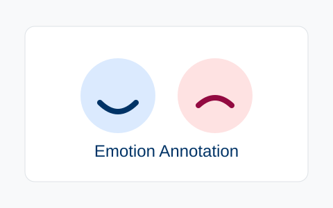
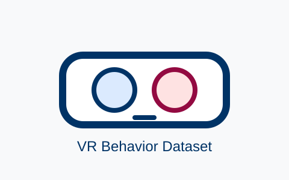

Xinyi Fu 付心仪
Associate Professor, The Future Laboratory, Tsinghua University
Dr. Xinyi Fu is an Associate Professor at The Future Laboratory, Tsinghua University. She received her Ph.D. in Design from the Academy of Arts & Design, Tsinghua University in 2018, and her Bachelor's degree from the Department of Computer Science and Technology, Tsinghua University in 2012.
Dr. Fu's research focuses on multimodal sensing, computing, and interaction in living spaces. Her work emphasizes the sensing and modeling of human behavior and psychology through multi-modal sensing to construct human-centric intelligent systems. These efforts aim to enhance the efficiency and quality of human-machine collaboration and deepen the machine's understanding of human cognition.
Research
Her team's research spans several key domains:
- Human Activity Recognition (HAR) and Affective Computing
- Smart Home systems and Embodied Intelligence
- Virtual and Augmented Reality (VR/AR)
- Digital Cultural Heritage
Publications

Projects
Elderly Care
Rapid identification and linked response mechanisms for
psychological anomalies in community-based elderly care systems.
Smart Sensing
Privacy-preserving proactive human identification and intelligent
sensing based on large models.
Cultural Heritage
Digital science popularization, exhibition, and broadcasting of
cultural heritage based on virtual reality.
Services
Membership
Senior Member of CCF and CSIG; Board Member of ICACHI.
Committee
Executive Member of the CCF Pervasive Computing and CCF
Human-Computer Interaction Technical Committees.
Reviewer
Organizing or program committee service for ACM CHI, IEEE ISMAR,
SIGGRAPH Asia, and ICHEC.
Experience
2018
Ph.D. in Design, Academy of Arts & Design, Tsinghua University.
2012
Bachelor's degree, Department of Computer Science and Technology,
Tsinghua University.